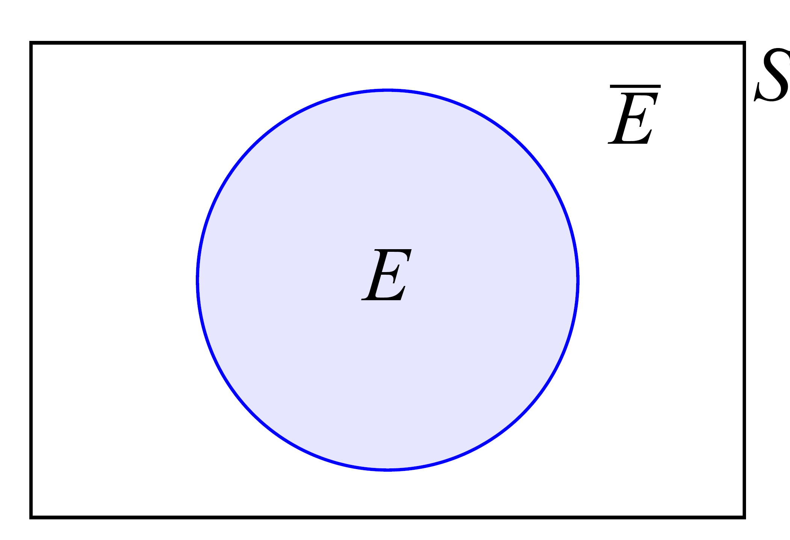

3. Teoría de conjuntos#
Se define como “espacio muestral” al conjunto de todos los resultados posibles en un problema probabilístico. Un “evento” es definido como un subconjunto cualquiera del espacio muestral.
La siguiente nomenclatura es utilizada a lo largo de este libro:
$\emptyset \rightarrow$ Conjunto vacío o evento imposible
$S \rightarrow$ Espacio muestral o evento cierto
$E \rightarrow$ Evento cualquiera
$\bar{E} \rightarrow$ Evento complementario (contiene todos los elementos de $S$ que no forman parte de $E$)
Note
Here is a note
Un espacio muestral y sus subconjuntos (o eventos) se puede representar gráficamente por medio de un “Diagrama de Venn” como se muestra en la Figura 1-1.

En muchos problemas prácticos el evento de interés puede ser la combinación de varios eventos. Solamente hay dos maneras de combinar eventos: la intersección ($\cap$) y la unión ($\cup$).
La unión de dos eventos, $E_1 \cup E_2$, es la ocurrencia de $E_1$, $E_2$ o ambos. La intersección de dos eventos $E_1 \cap E_2$, o simplemente $E_1 E_2$, es la ocurrencia de $E_1$ y $E_2$. En la Figura 1-2, las superficies sombreadas representan las definiciones anteriores en la forma de Diagramas de Venn.

Dos eventos son mutuamente excluyentes cuando la intersección de ambos da como resultado el conjunto vacío ($E_1 E_2 = \emptyset$). Por otra parte, dos eventos son colectivamente exhaustivos cuando su unión es el espacio muestral ($E_1 \cup E_2 = S$) (ver Figura 1-3).
Si los eventos son mutuamente excluyentes y colectivamente exhaustivos, entonces cubren todo el espacio muestral sin solaparse, como se ve en la Figura 1-3 (b). En otras palabras, un resultado aleatorio cualquiera del espacio muestral pertenecerá a alguno de los dos eventos, pero nunca a ambos simultáneamente. Este conjunto de eventos mutuamente excluyentes y colectivamente exhaustivos es importante como se verá más adelante.

3.1. Reglas operacionales#
Axiomas de igualdad
Dos conjuntos son iguales si y solo si ambos conjuntos contienen exactamente los mismos elementos. Del axioma de igualdad se derivan los siguientes resultados de algunas operaciones entre un conjunto cualquiera $A$ y otros conjuntos característicos del espacio muestral:
La unión o intersección de un conjunto cualquiera $A$ y el conjunto vacío $\emptyset$, tiene como resultado el conjunto vacío:
$$ A \cup \emptyset = A \quad A \emptyset = \emptyset $$
La unión de $A$ con el espacio muestral $S$ tiene como resultado el espacio muestral, y la intersección de ambos tiene como resultado el conjunto $A$:
$$ A \cup S = S \quad A S = A $$
La unión o intersección de un conjunto $A$ consigo mismo, tiene como resultado el mismo conjunto $A$:
$$ A \cup A = A \quad A A = A $$
La unión de un conjunto $A$ con su complemento tiene como resultado el espacio muestral, mientras que la intersección de ambos tiene como resultado el conjunto vacío:
$$ A \cup \bar{A} = S \quad A \bar{A} = \emptyset $$
El conjunto complementario del complemento de $A$ es el mismo conjunto $A$:
$$ \overline{(\bar{A})} = A $$
A continuación, se describen algunas propiedades útiles en las operaciones de conjuntos:
Propiedad conmutativa
El orden en que se realiza la operación no altera el resultado final:
$$ A \cup B = B \cup A $$
$$ A B = B A $$
Propiedad asociativa
$$ (A \cup B) \cup C = A \cup (B \cup C) $$
$$ (A B) C = A (B C) $$
Propiedad distributiva
$$ (A \cup B) C = (A C) \cup (B C) $$
$$ (A B) \cup C = (A \cup C)(B \cup C) $$
Leyes de De Morgan
La Ley de De Morgan dice que el complemento de la unión, es la intersección de los complementos, y que inversamente, el complemento de la intersección es la unión de los complementos.
$$ \overline{E_1 \cup E_2 \cup \ldots \cup E_n} = \overline{E_1} \cap \overline{E_2} \cap \ldots \cap \overline{E_n} $$
$$ \overline{E_1 E_2 \ldots E_n} = \overline{E_1} \cup \overline{E_2} \cup \ldots \cup \overline{E_n} $$
En la siguiente figura se ve la demostración básica de las Leyes utilizando los diagramas de Venn.

4. Teoría matemática de la probabilidad#
La teoría matemática de la probabilidad está basada sobre los siguientes tres axiomas:
$P(E) \geq 0$ donde $E$ es un subconjunto del espacio muestral $S$.
$P(S) = 1$
Si dos eventos son mutuamente excluyentes $E_1 E_2 = \emptyset$, entonces $P(E_1 \cup E_2) = P(E_1) + P(E_2)$
En relación con el tercer axioma, desde un punto de vista frecuencial, si un evento $E_1$ ocurre $n_1$ veces en $n$ repeticiones de un experimento y otro evento $E_2$ ocurre $n_2$ veces en las mismas $n$ repeticiones, en las cuales $E_1$ y $E_2$ no pueden ocurrir simultáneamente (es decir que son mutuamente excluyentes), luego $E_1$ o $E_2$ ocurrirán $(n_1 + n_2)$ veces en las $n$ repeticiones. Entonces, la definición de probabilidad basada en la frecuencia relativa indica que:
$$ E_1 \cup E_2 \rightarrow n_1 + n_2 \text{ eventos} $$
$$ P(E_1 \cup E_2) = \frac{n_1 + n_2}{n} = P(E_1) + P(E_2) $$
A partir de los axiomas de la teoría de la probabilidad se puede deducir de manera inmediata el siguiente teorema para la probabilidad del complemento de un evento $E$:
$$ P(E \cup \bar{E}) = P(E) + P(\bar{E}) = P(S) = 1 $$
$$ P(\bar{E}) = 1 - P(E) $$
4.1. Probabilidad de la unión de eventos#
Para dos conjuntos cualesquiera,
$$ P(E_1 \cup E_2) = P(E_1 \cup \bar{E}_1 E_2) = P(E_1) + P(\bar{E}_1 E_2) $$
Ahora analizamos el conjunto del último término,
$$ E_1 (\bar{E}_1 E_2) = \emptyset $$
$$ (\bar{E}_1 E_2) \cup (E_1 E_2) = (\bar{E}_1 \cup E_1) E_2 = E_2 $$
$$ \to P(\bar{E}_1 E_2) + P(E_1 E_2) = P(E_2) $$
$$ \to P(\bar{E}_1 E_2) = P(E_2) - P(E_1 E_2) $$
Y reemplazando en la primera ecuación se deduce que,
$$ P(E_1 \cup E_2) = P(E_1) + P(E_2) - P(E_1 E_2) $$
Ahora, si se tienen 3 conjuntos,
$$ P(E_1 \cup E_2 \cup E_3) = P[(E_1 \cup E_2) \cup E_3] = P(E_1 \cup E_2) + P(E_3) - P[(E_1 \cup E_2) E_3] $$
$$ = P(E_1) + P(E_2) - P(E_1 E_2) + P(E_3) - P(E_1 E_3 \cup E_2 E_3) $$
$$ = P(E_1) + P(E_2) - P(E_1 E_2) + P(E_3) - P(E_1 E_3) - P(E_2 E_3) + P(E_1 E_2 E_3) $$
Consideramos ahora un conjunto de $n$ eventos,
$$ P(E_1 \cup E_2 \cup \ldots \cup E_n) = 1 - P(\overline{E_1 \cup E_2 \cup \ldots \cup E_n}) = 1 - P(\overline{E_1} \cap \overline{E_2} \cap \ldots \cap \overline{E_n}) $$
Que no es otra cosa que la aplicación de la Regla de De Morgan vista en el punto anterior. Ahora bien, si suponemos que los conjuntos son mutuamente excluyentes, es decir, que su intersección es nula, se puede calcular,
$$ P(E_1 \cup E_2 \cup \ldots \cup E_n) = \sum_{i=1}^n P(E_i) $$
4.2. Probabilidad condicional#
Se denomina probabilidad condicional a la probabilidad de ocurrencia de un determinado evento, sabiendo que ocurrió otro evento. Es decir, la probabilidad de ocurrencia de un evento condicionada a la ocurrencia de otro.
El resultado de condicionar la probabilidad de que suceda un evento a la ocurrencia cierta de otro es que se modifica el espacio muestral de referencia para determinar probabilidades. El espacio muestral (que abarca todos los posibles eventos) es ahora el evento cierto.

Se deduce entonces,
$$ P(E_1 / E_2) = \frac{P(E_1 E_2)}{P(E_2)} $$
Además se puede deducir la relación entre probabilidades condicionales complementarias según,
$$ P(E / E_2) + P(\bar{E} / E_2) = \frac{P(E E_2)}{P(E_2)} + \frac{P(\bar{E} E_2)}{P(E_2)} $$
$$ = \frac{P[(E \cup \bar{E}) E_2]}{P(E_2)} = 1 $$
Por lo que,
$$ P(\bar{E} / E_2) = 1 - P(E / E_2) $$
Por último, se puede demostrar que las probabilidades condicionales pueden calcularse mediante las reglas básicas ya vistas para operaciones de conjuntos, siempre que se considere el espacio muestral reducido. Por ejemplo, en la unión de dos eventos,
$$ P(E_1 \cup E_2 / A) = P(E_1 / A) + P(E_2 / A) - P(E_1 E_2 / A) $$
4.3. Independencia estadística#
A partir de la definición de probabilidad condicional de un evento respecto de otro, se puede deducir de manera inmediata lo que se conoce como “independencia estadística” entre dos eventos.
Esto es, dos eventos son estadísticamente independientes si la ocurrencia cierta de uno no afecta la probabilidad de ocurrencia del otro. En notación matemática,
$$ \left.\begin{array}{l} P(E_1 / E_2) = P(E_1) \ P(E_2 / E_1) = P(E_2) \end{array}\right} \therefore \text{ son estadísticamente independientes} $$
A partir de la ecuación (1.6), se puede deducir la siguiente relación entre las probabilidades condicionales de dos eventos,
$$ P(E_1 E_2) = P(E_1 / E_2) P(E_2) = P(E_1 / E_1) $$
Además, se ve que si dos eventos son estadísticamente independientes, la probabilidad de su intersección está dada por,
$$ P(E_1 E_2) = P(E_1) P(E_2) $$
De igual manera, puede probarse que si dos eventos son estadísticamente independientes, también lo serán sus complementarios.
$$ P(\bar{E}_1 \bar{E}_2) = 1 - P(E_1 \cup E_2) $$
$$ = 1 - [P(E_1) + P(E_2) - P(E_1 E_2)] $$
$$ = 1 - [P(E_1) + P(E_2) - P(E_1) P(E_2)] $$
$$ P(\bar{E}_1 \bar{E}_2) = P(\bar{E}_1) P(\bar{E}_2) $$
4.4. Teorema de la probabilidad total#
En ciertas ocasiones, la ocurrencia de un evento determinado está sujeta a la ocurrencia o no de otros eventos. De esta manera, puede desagregarse dicha probabilidad de ocurrencia en la ocurrencia de determinados eventos que abarquen todo el espacio muestral $S$.
El Teorema de la probabilidad total establece que, dados $n$ eventos $E_i$ mutuamente exclusivos y colectivamente exhaustivos, la probabilidad del evento $A$ puede calcularse según,
$$ A = A S = A (E_1 \cup E_2 \cup \ldots \cup E_n) = A E_1 \cup A E_2 \cup \ldots \cup A E_n $$
Como los eventos $E_i$ son mutuamente excluyentes,
$$ P(A) = P(A E_1) + P(A E_2) + \ldots + P(A E_n) $$
Y a partir de la definición de probabilidad condicional, se puede escribir según,
$$ P(A) = P(A / E_1) P(E_1) + P(A / E_2) P(E_2) + \ldots + P(A / E_n) P(E_n) $$
4.5. Teorema de Bayes#
El teorema de Bayes es un corolario del Teorema de la probabilidad total visto en el punto anterior. Este establece que, dada la siguiente relación entre eventos
$$ P(A / E_1) P(E_1) = P(E_1 / A) P(A) $$
$$ P(E_1 / A) = \frac{P(A / E_1) P(E_1)}{P(A)} $$
Se puede establecer la siguiente definición a partir del Teorema de probabilidad total,
$$ P(E_1 / A) = \frac{P(A / E_1) P(E_1)}{\sum_{j=1}^n P(A / E_j) P(E_j)} $$
4.6. EJEMPLO 1.1#
La ciudad $C$ está alimentada de agua por dos ciudades $A$ y $B$, según la disposición de ramas que se ve en la figura. Se asume que una sola de las dos ciudades $A$, $B$ alcanza para satisfacer de agua a la ciudad $C$.
Determinar el evento “La ciudad tendrá agua”, a partir de los eventos de falla de cada una de las ramas.
Definición de eventos:
$E_i$: falla la rama $i$
$F$: Falla de agua en la ciudad $C$
El evento $F$ se puede expresar como, $F \equiv (E_1 E_2) \cup E_3$
Y se define al evento “la ciudad $C$ tiene agua”, como el complementario de $F$: $\bar{F} = \overline{(E_1 E_2) \cup E_3}$
Por la Ley de De Morgan,
$$ \bar{F} = \overline{E_1 E_2} \cdot \overline{E_3} = (\overline{E_1} \cup \overline{E_2}) \overline{E_3} $$
4.7. EJEMPLO 1.2#
Determinar la probabilidad de falla del siguiente reticulado, si suponemos que falla cuando al menos una de las barras falla.
Probabilidad de que falle cada barra:
$$ P(A) = 0.05 $$
$$ P(B) = 0.04 $$
$$ P(C) = 0.03 $$
Las fallas en las barras son estadísticamente independientes.
Definimos el evento “falla”: $F \equiv A \cup B \cup C$
Por lo que la probabilidad de falla está dada por: $P(F) = P(A \cup B \cup C)$
$$ P(A \cup B \cup C) = P(A) + P(B) + P(C) - P(A B) - P(B C) - P(A C) + P(A B C) $$
Calculamos cada uno de los términos:
$$ P(A B) = P(A) P(B) = 0.002 $$
$$ P(B C) = P(B) P(C) = 0.0012 $$
$$ P(A C) = P(A) P(C) = 0.0015 $$
$$ P(A B C) = P(A) P(B) P(C) = 0.00006 $$
La probabilidad de falla es entonces: $P(F) = 0.11536$
El problema puede resolverse también utilizando las Leyes de De Morgan. De esta manera, la probabilidad de falla puede calcularse según,
$$ P(A \cup B \cup C) = 1 - P(\overline{A \cup B \cup C}) = 1 - P(\overline{A} \overline{B} \overline{C}) $$
$$ = 1 - P(\bar{A}) P(\bar{B}) P(\bar{C}) = 0.11536 $$
4.8. EJEMPLO 1.3#
Se tiene un pavimento que es revisado de a tramos de $100 , \text{m}$ por ultrasonido, para detectar fallas durante el proceso constructivo. El pavimento será aceptado si su espesor medido es mayor o igual a $19 , \text{cm}$.
Se definen los siguientes eventos:
$A$: espesor medido $\geq 19 , \text{cm}$
$G$: espesor real $\geq 19 , \text{cm}$
Se sabe, de datos del fabricante, que la confiabilidad del método de ultrasonido es del $80%$; es decir, la probabilidad de que lo medido se condiga con la realidad es $0.80$. Además, el $90%$ de los pavimentos debe ser aceptado.
De los datos del problema se tiene:
$$ P(G / A) = 0.80 $$
$$ P(\bar{G} / \bar{A}) = 0.80 $$
$$ P(A) = 0.90 $$
¿Cuál es la probabilidad de que una sección no sea aceptada dado que está bien construida?
$$ P(\bar{A} / G) = 1 - P(A / G) = 0.20 $$
¿Cuál es la probabilidad de que una sección esté bien construida y sea aceptada?
$$ P(G A) = P(G / A) P(A) = 0.80 \times 0.90 = 0.72 $$
¿Cuál es la probabilidad de que una sección esté mal construida y sea aceptada?
$$ P(\bar{G} A) = P(\bar{G} / A) P(A) = 0.20 \times 0.90 = 0.18 $$
4.9. EJEMPLO 1.4#
Partiendo del problema anterior, lo que interesa para el control de calidad del pavimento es conocer la probabilidad de que sea aceptada una sección, dado que está bien construida.
Utilizando el Teorema de Bayes,
$$ P(A / G) = \frac{P(G / A) P(A)}{P(G)} $$
La probabilidad $P(G)$ se obtiene con el Teorema de la probabilidad total,
$$ P(G) = P(G / A) P(A) + P(G / \bar{A}) P(\bar{A}) $$
$$ P(G) = 0.8 \times 0.9 + 0.2 \times 0.1 = 0.74 $$
Por lo que,
$$ P(A / G) = \frac{0.80 \times 0.90}{0.74} = 0.973 $$
Se define entonces al “Riesgo del productor” a la probabilidad de que no sea aceptada una sección, dado que está bien construida.
$$ P(\bar{A} / G) = 1 - P(A / G) = 0.027 $$
Se define entonces al “Riesgo del consumidor” a la probabilidad de que sea aceptada una sección, dado que NO fue bien construida.
$$ P(A / \bar{G}) = \frac{P(A \bar{G})}{P(\bar{G})} = \frac{P(A \bar{G})}{1 - P(G)} = \frac{0.18}{0.26} = 0.69 $$
A partir de los resultados obtenidos, se puede ver que el método de ensayo utilizado está muy sesgado en favor del productor.
4.10. EJEMPLO 1.5#
Se tiene un sistema de dos elementos en serie traccionado en sus extremos por una determinada carga. Bajo esa carga, la probabilidad de falla de cada elemento individualmente es del $5%$.
Determinar la falla del sistema, considerando que las fallas de los elementos son estadísticamente independientes (proveedores diferentes).
De los datos del problema se define,
$$ \left.\begin{array}{l} E_1: \text{ falla de elemento 1} \ E_2: \text{ falla de elemento 2} \end{array}\right} P(E_1) = P(E_2) = 0.05 $$
Se define el evento de falla del sistema: $P(F) = P(E_1 \cup E_2)$
$$ P(E_1 \cup E_2) = P(E_1) + P(E_2) - P(E_1 E_2) $$
Debemos determinar la probabilidad conjunta,
$$ P(E_1 E_2) = P(E_1) P(E_2) = 0.0025 $$
Por lo que la probabilidad de falla es,
$$ P(F) = 0.05 + 0.05 - 0.0025 = 0.098 $$
Ahora supongamos el caso en que el proveedor es el mismo y los eslabones son idénticos, por lo que podemos asumir que $P(E_2 / E_1) = 1$.
La probabilidad de falla es entonces,
$$ P(F) = P(E_1) + P(E_2) - P(E_1 E_2) = P(E_1) + P(E_2) - P(E_2 / E_1) P(E_1) $$
$$ P(F) = 0.05 + 0.05 - 0.05 = 0.05 $$
Se ve que, dependiendo del grado de dependencia estadística entre la falla de ambos componentes de la cadena, la probabilidad de falla del sistema variará entre $0.05 - 0.098$ (desde dependencia total hasta independencia estadística respectivamente). Esto es una diferencia del doble.
4.11. EJEMPLO 1.6#
En el pórtico de la figura las bases pueden asentarse debido a las propiedades del suelo. Se sabe que la probabilidad de asentamiento de cada base individualmente es del $10%$ y que la probabilidad de que se asiente una base, dado que se asentó la otra, es del $80%$.
Determinar la probabilidad de que el pórtico sufra un asentamiento.
Definimos los eventos:
$A$: Asentamiento de base $A$
$B$: Asentamiento de base $B$
Entonces la probabilidad buscada es,
$$ P(A \cup B) = P(A) + P(B) - P(A B) $$
$$ = P(A) + P(B) - P(B / A) P(A) $$
$$ P(A \cup B) = 0.1 + 0.1 - 0.8 \times 0.1 = 0.12 $$
Determinar la probabilidad de que el pórtico sufra un asentamiento diferencial (una base se asiente, pero la otra no).
Se define la probabilidad buscada como,
$$ P(A \bar{B} \cup \bar{A} B) = P(A \bar{B}) + P(\bar{A} B) $$
$$ = P(\bar{B} / A) P(A) + P(\bar{A} / B) P(B) $$
$$ = [1 - P(B / A)] P(A) + [1 - P(A / B)] P(B) $$
$$ P(A \cup B) = (1 - 0.8) 0.1 + (1 - 0.8) 0.1 = 0.04 $$
4.12. EJEMPLO 1.7#
La construcción de una autopista en la ciudad depende fuertemente del resultado de las elecciones políticas. Si ganan los radicales, la probabilidad de que se construya la autopista es del $20%$, mientras que, si ganan los justicialistas, es del $70%$.
Determinar la probabilidad de que se construya la autopista si la probabilidad de que gane uno de los dos partidos es 50-50.
De los datos del problema se definen eventos y probabilidad,
$A$: Se construye la autopista
$R$: Ganan los radicales
$J$: Ganan los justicialistas
$$ P(A / R) = 0.2; , P(A / J) = 0.7; , P(R) = P(J) = 0.5 $$
La probabilidad de $A$ se calcula utilizando el Teorema de la probabilidad total,
$$ P(A) = P(A / R) P(R) + P(A / J) P(J) $$
$$ P(A) = 0.2 \times 0.5 + 0.7 \times 0.5 = 0.45 $$
Determinar la probabilidad de $A$ si $P(J) = 0.60$
$$ P(A) = P(A / R) P(R) + P(A / J) P(J) $$
$$ P(A) = 0.2 \times 0.4 + 0.7 \times 0.6 = 0.50 $$
Determinar la probabilidad de $A$ si $P(R) = 0.60$
$$ P(A) = P(A / R) P(R) + P(A / J) P(J) $$
$$ P(A) = 0.2 \times 0.6 + 0.7 \times 0.4 = 0.40 $$
4.13. EJEMPLO 1.8#
Se tiene un grupo de pilotes diseñado para soportar una carga última de $200 , \text{t}$. Por un caso extraordinario, debe pasar por encima de ellos una carga de $300 , \text{t}$. De ensayos de carga realizados se sabe que la probabilidad de que el grupo de pilotes aguante las $300 , \text{t}$ (evento $A$) es del $70%$.
Se propone realizar una prueba de carga sobre los pilotes, sometiéndolos a una carga de $280 , \text{t}$. Si el grupo de pilotes es capaz de soportar $300 , \text{t}$, entonces el resultado de la prueba será exitoso (evento $T$) con seguridad. Si el grupo de pilotes no es capaz de soportar las $300 , \text{t}$, entonces la probabilidad de que el ensayo sea exitoso es del $50%$.
Determinar si se justifica realizar el ensayo sobre los pilotes.
De los datos del problema tenemos que,
$$ P(A) = 0.70 $$
$$ P(T / \bar{A}) = 0.50 $$
$$ P(T / A) = 1 $$
Queremos determinar la probabilidad de que el grupo de pilotes soporte las $300 , \text{t}$, si es que el ensayo es exitoso. Entonces,
$$ P(A / T) = \frac{P(T / A) P(A)}{P(T)} = \frac{P(T / A) P(A)}{P(T / A) P(A) + P(T / \bar{A}) P(\bar{A})} $$
$$ P(A / T) = \frac{1 \times 0.70}{1 \times 0.70 + (1 - 0.50) 0.30} = 0.824 $$
Como se ve del resultado, si el ensayo resulta exitoso, la probabilidad de que el grupo de pilotes soporte la carga extraordinaria aumenta. El ensayo está justificado.